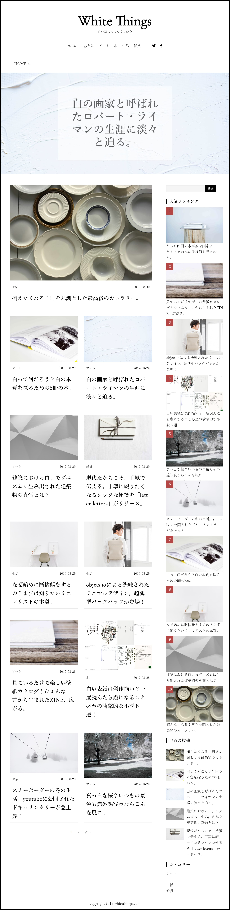
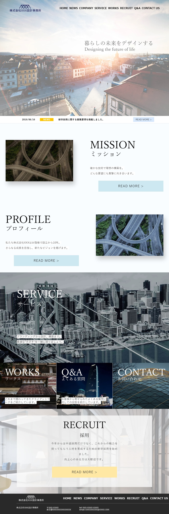
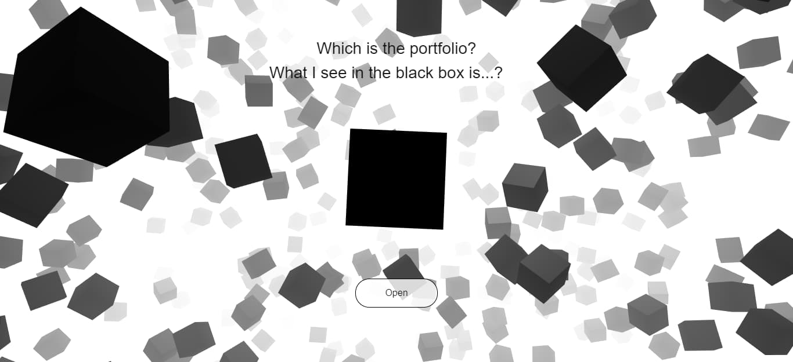
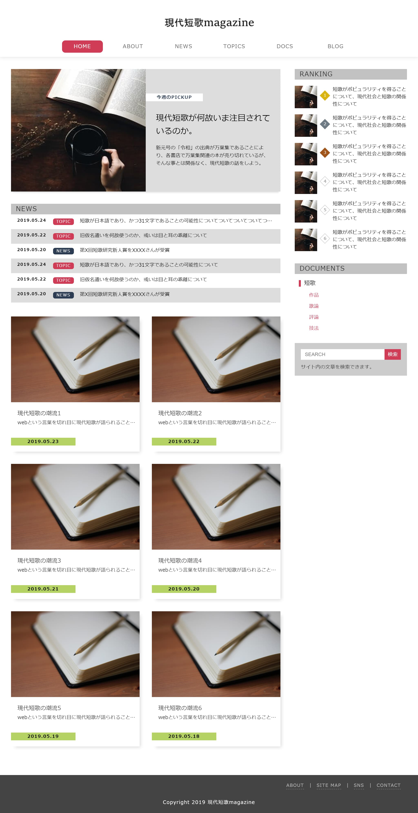

ABOUT
1996年生まれの21卒生。
埼玉大学大学院理工学研究科数理電子情報系専攻に在籍中の修士1年。
大学での専門は電気電子なのですが、将来的な働き方や個人としての価値を考えた末に、webに関連する仕事がしたいと強く思い、方向転換しました。
独学で学んできたWEB制作のスキルが活かせる会社への就職を考えています。
どんなデザインにも柔軟に対応出来るフロントエンドエンジニアを目指します！
また、UI, UXを意識したWEBデザインやWEBメディア構築にも興味が有り、Vue.jsにも後々手を出してみたいです。
趣味は文学全般で、小説や詩、短歌などが好き。
SKILLS
使用経験のあるもの。
- HTML5
- CSS3 >
- SASS(scss)
- BootStrap4
- JavaScript >
- jQuery
- Gulp4
- Three.js
- Barba.js v2
- Pace.js
- t.js
- WordPress
- PhotoShop
PORTFOLIO
実務経験はありませんが、幾つかの自作がありますので、紹介させて下さい！
-

White Things
テンプレートは使わずに0からテーマを作成し、WEBメディアサイトを構築しました。
HTML5/CSS3/JavaScript/PHP/WordPressを用いて制作。
レスポンシブ対応済み。(制作日：2019-08)
Click to visit -

コーポレートサイト
Barba.jsを試してみたくなり、奥村設計事務所様(http://www.om-s.co.jp/)のサイトデザインを参考にさせて頂きつつ実装しました。
HTML5/CSS3/jQuery/Barba.jsを用いて制作。
レスポンシブ対応済み。(制作日：2019-07)
Click to visit -

旧ポートフォリオサイト
Three.jsを用いてブラックボックスが回るサイトを作りました。
「人はブラックボックス」をコンセプトに作成。
HTML5/CSS3/jQuery/Three.jsを用いて制作。
レスポンシブ対応済み。(制作日：2019-06)
Click to visit -

メディアトップページ
HTML5/CSS3/jQueryを用いて制作。
レスポンシブ対応済み。(制作日：2019-05)
Click to visit
CONTACT
E-mail
▼
r.ohashi.099@ms.saitama-u.ac.jp
-------
Wantedly
▼
https://www.wantedly.com/users/103712321